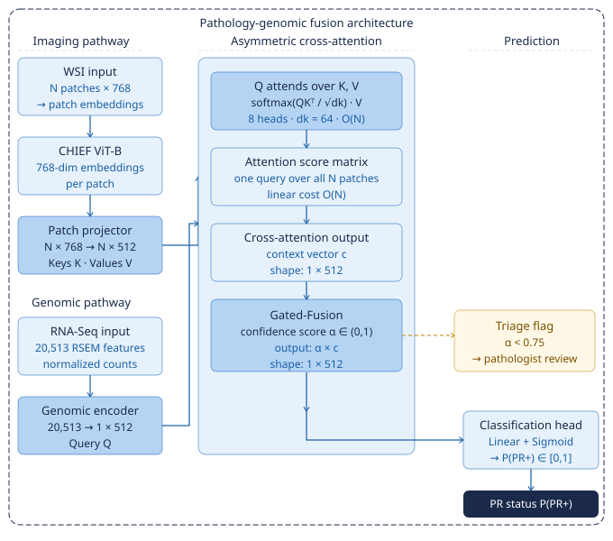
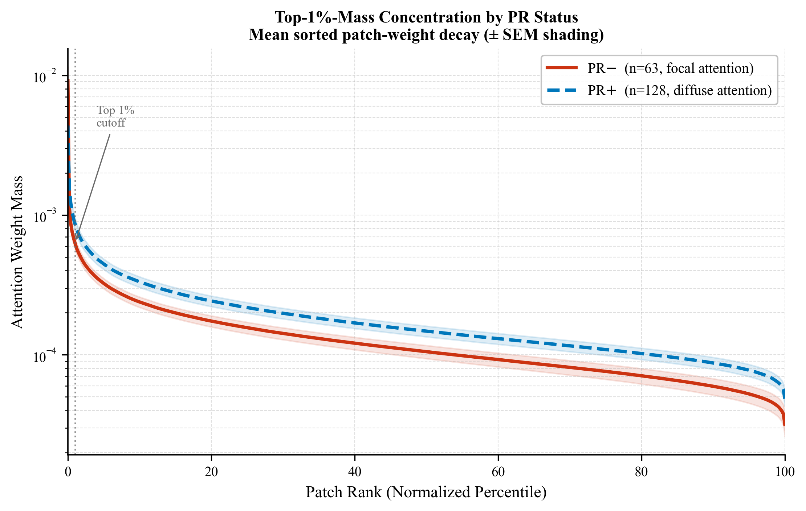
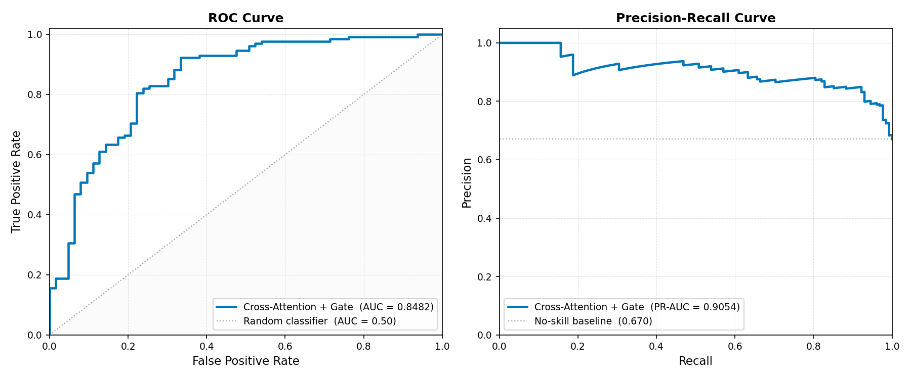
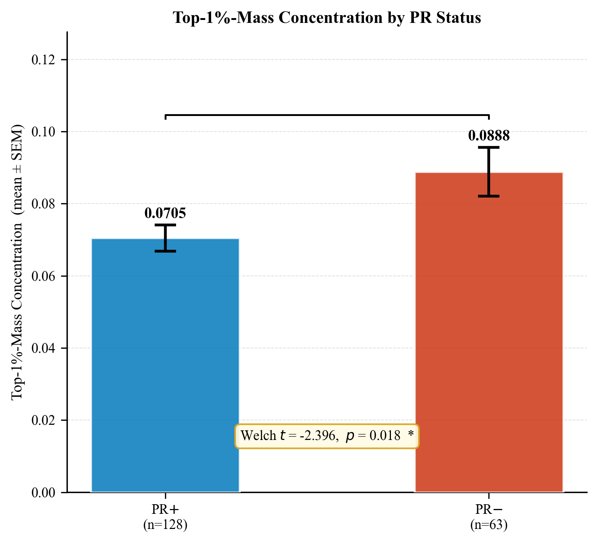
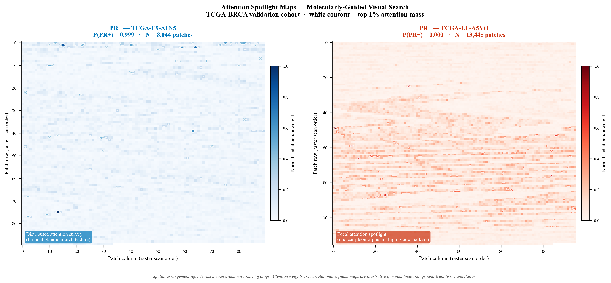

Dataset: TCGA-BRCA · N = 951 patients · 638 PR+ / 313 PR-
Stack: PyTorch · MONAI · CHIEF ViT-B · Scikit-learn
1 The Challenge
1.1 Clinical Necessity
PR status determines whether a breast cancer patient is a candidate for endocrine therapies such as tamoxifen and aromatase inhibitors. A misclassification in either direction carries direct clinical cost: false positives expose patients to ineffective hormonal therapy, while false negatives withhold potentially curative treatment. The current gold standard, IHC staining of biopsy tissue, is subject to inter-pathologist disagreement, particularly in borderline cases near the positivity threshold.
1.2 Structural Incompatibility Problem
The core engineering challenge is data structure, not modeling capacity. A transcriptomic profile is a fixed-length vector occupying an identical coordinate space across all patients. A digitized whole-slide image yields a variable-length, unordered patch bag whose size varies by more than an order of magnitude depending on tissue area and scanner footprint. Standard fusion architectures address this by either compressing the patch bag to a fixed summary, discarding spatial specificity, or imposing positional encodings tied to scanner trajectory rather than tissue biology. Both approaches fail to generalize across acquisition platforms.
1.3 Slide-Size Confounder
A third problem emerges not in the fusion architecture but in evaluating it. Shannon entropy, the intuitive metric for attentional focus, is mathematically bounded above by log N. Any interpretability metric applied to variable-length attention distributions must be normalized for input size before group-level conclusions can be drawn.
These three challenges motivate the architectural and measurement design choices presented in the following sections.
3 Contributions
This work introduces three components that together address the structural, clinical triage, and interpretability gaps identified above:
Asymmetric cross-attention fusion treats the patient’s transcriptomic profile as a query token that searches the entire slide for diagnostically relevant tissue at linear computational cost, without positional encoding, pathway annotation, or pre-aggregation.
Cross-Modal Reliability Estimator is a lightweight gated fusion layer that produces a scalar confidence score reflecting cross-modal agreement between genomic and imaging evidence. Discordant cases are flagged for pathologist review alongside the model prediction, extending the system beyond a discriminative score into a clinically actionable triage tool.
Top-1%-Mass Concentration is a normalization-independent interpretability metric that quantifies attentional focus across any slide size. It recovers statistically significant phenotypic separation between PR- and PR+ patients that entropy-based analysis fails to recover on the same cohort, demonstrating that the measurement instrument rather than the model was the bottleneck.
4 Proposed Framework
4.1 Asymmetric Cross-Attention Architecture
The approach treats the patient’s transcriptomic profile as a query and the slide as the evidence being searched. Patch-level features come from the frozen CHIEF ViT-B encoder [5], used exclusively as a feature extractor with no weight updates on TCGA-BRCA, preserving held-out evaluation integrity. The genomic RNA-Seq vector is compressed from 20,513 dimensions to 512, forming a single query token Q. Each of the N patch embeddings is projected from 768 to 512 dimensions, forming keys K and values V. No positional encoding is applied, preserving permutation invariance of the unordered patch bag. Dimensionality flow through each component is summarized in Table 1.
| Component | Input Shape | Output Shape |
|---|---|---|
| RNA-Seq projector (Q) | (1 × 20,513) | (1 × 512) |
| Patch projector (K) | (N × 768) | (N × 512) |
| Patch projector (V) | (N × 768) | (N × 512) |
| Cross-attention | Q: (1 × 512), K/V: (N × 512) | (1 × 512) |
The query token attends over all N patch embeddings simultaneously:
\text{Attention}(Q, K, V) = \text{softmax}\!\left(\frac{QK^\top}{\sqrt{d_k}}\right) V
Because Q has shape (1 × N) rather than (N × N), attention cost scales linearly with slide size rather than quadratically. The output, denoted c, encodes the visual appearance of tissue regions the transcriptomic profile deemed most diagnostically relevant.
4.2 Cross-Modal Reliability Estimator
The Cross-Modal Reliability Estimator estimates agreement between the transcriptomic and visual streams on a per-patient basis. The context vector c and query token Q are concatenated and passed through a single linear projection with Sigmoid, producing a scalar confidence score α ∈ (0, 1):
\alpha = \sigma\!\left(W_g \cdot [\mathbf{c} \Vert \mathbf{Q}] + b_g\right), \qquad \text{gated} = \alpha \cdot \mathbf{c}
| Component | Input Shape | Output Shape |
|---|---|---|
| Concatenation | (1 × 512), (1 × 512) | (1 × 1024) |
| Linear + Sigmoid | (1 × 1024) | scalar α ∈ (0, 1) |
| Gated output | α · c | (1 × 512) |
The estimator outputs high confidence when transcriptomic and imaging evidence point in the same direction, and low confidence when they diverge. When aligned, α → 1, retaining the full cross-attention signal. When discordant, a low raw α suppresses the visual contribution to the final prediction, since the transcriptomic profile has already guided which tissue regions were retrieved at the search stage. Following Platt calibration, cases below the empirical threshold of 0.75 are escalated to pathologist review.
The overall architecture is shown in Figure 1.

4.3 Top-1%-Mass Concentration Metric
The attention computation produces a weight distribution over all N patches, extracted at inference time to quantify attentional focus. For each patient, the top 1% of patches by attention weight are identified; Top-1%-Mass Concentration is the fraction of total attention mass those patches carry:
\text{Top-1\%-Mass} = \frac{\displaystyle\sum_{i=1}^{k} w_{\sigma(i)}}{\displaystyle\sum_{i=1}^{N} w_i}
The denominator normalizes by total attention mass, making the metric directly comparable across patients regardless of slide size.

5 Experimental Evaluation
This section reports discriminative performance against unimodal and multimodal baselines, cross-modal reliability evaluation, and interpretability analysis.
5.1 Predictive Performance
Four models are compared: the proposed Cross-Attention + Gate system, Late Fusion, ABMIL, and CLAM-SB. The model was evaluated on a stratified held-out cohort of 191 patients (80/20 split of 951 total), with 128 PR+ and 63 PR- cases reflecting the 2:1 class imbalance of the full dataset. All results derive from inference on trained checkpoints under identical conditions. Results are summarized in Table 3.
Results resolve into two performance bands. Unimodal systems plateau near AUC 0.69 to 0.71, unable to distinguish PR+ from PR- slides without transcriptomic state. Late Fusion closes part of the remaining gap, but fusion occurs after compression. The cross-attention model applies transcriptomics at the search stage, before compression, accounting for a +0.0801 AUC margin over Late Fusion and +0.1388 over the best unimodal baseline (Table 3, Table 4). ROC and Precision-Recall curves are shown in Figure 3. Weight decay regularization is load-bearing for the base classifier; an unregularized ablation produced a 0.37-point overfit gap (training AUC 0.9912, validation AUC 0.6240), confirming the transcriptomic projection has sufficient capacity to memorize labels without regularization.
The comparisons reported here are against baselines reimplemented under identical training conditions. Published benchmarks for PR-status classification on TCGA-BRCA exist for unimodal WSI approaches [2], but no direct comparator is available for multimodal RNA-Seq and WSI fusion under matched input conditions.
| Metric | Value |
|---|---|
| ROC-AUC | 0.8482 |
| ROC-AUC (95% CI, DeLong) | 0.787 to 0.910 |
| ROC-AUC gain over late fusion baseline | +0.0801 |
| ROC-AUC gain over best unimodal baseline (ABMIL) | +0.1388 |
| PR-AUC at 2:1 class imbalance | 0.9054 |
| Brier Score | 0.17 |

5.2 Cross-Modal Reliability Evaluation
The Cross-Modal Reliability Estimator is trained using a direction anchor loss that ties the confidence score α directly to cosine similarity between the visual embedding v and transcriptomic query g. Standard BCE loss alone produced global threshold collapse; the gate shifted α uniformly rather than discriminating between patients. The anchor loss resolves this by supervising α against cross-modal agreement:
\mathcal{L}_{\text{anchor}} = \text{MSE}\!\left(\alpha,\; \sigma(s \cdot \text{cos}(v, g))\right)
High α indicates the two streams agree; low α indicates discordance. CHIEF ViT-B visual embeddings and RNA-Seq projections are nearly orthogonal in this cohort (cosine similarity mean = -0.032), requiring a sharpening factor s = 20 to spread anchor targets away from 0.5.
Following anchor loss training and Platt calibration, the estimator produces a directionally stable, class-imbalance-robust per-patient concordance signal (balanced p = 1.02e-09, verified on a class-balanced subsample). The calibrated flagging threshold is approximately 0.75 to 0.80.
5.3 Interpretability Analysis
Analysis of attention patterns using the Top-1%-Mass Concentration metric reveals significantly higher attentional focus in PR- patients than PR+ patients (p = 0.018), consistent with the focal architectural abnormalities characteristic of hormone receptor-negative disease [6], as shown in Figure 4. The entropy-based metric yields p = 0.401 on the same data, confirming the signal was suppressed by the slide-size confounder rather than absent from the model.

6 Biological Interpretation
6.1 Attention Patterns and PR Phenotype
The Top-1%-Mass Concentration analysis reveals a significant difference in attention distribution between PR-negative and PR-positive tumors (p = 0.018). PR-negative patients exhibit higher concentration than PR-positive patients (0.0888 vs 0.0705), indicating that the model selectively focuses on a smaller subset of tissue regions when classifying hormone receptor-negative disease.
This pattern is consistent with known histopathologic differences between PR phenotypes. PR-negative tumors are more frequently associated with higher-grade morphological features, including increased mitotic activity, geographic necrosis, and pushing borders [6], whereas PR-positive tumors more commonly exhibit organized glandular architecture characteristic of luminal disease. The model was not provided explicit supervision for these structures; the observed attention patterns therefore suggest that transcriptomic conditioning enables retrieval of morphologically informative regions associated with PR status.
Attention spotlight maps provide qualitative evidence of this spatial behavior, showing distributed tissue interrogation in PR-positive cases and more focal attention patterns in PR-negative cases (Figure 5). These findings demonstrate that appropriate normalization of attention measurements can reveal biologically associated spatial patterns that are obscured by slide-size-dependent metrics such as entropy.

6.2 Borderline IHC Cases
The Cross-Modal Reliability Estimator is designed to flag cases where transcriptomic and imaging evidence disagree, enabling selective escalation to pathologist review. On the 191-patient held-out cohort, the gate demonstrates the intended directional behavior: among concordant cases (calibrated α > 0.75), 83.1% are PR+; among flagged cases (α < 0.75), 67.2% are PR-, as shown in Table 5.
| Concordant (α > 0.75) | Flagged for review (α < 0.75) | |
|---|---|---|
| PR+ | 108 (83.1%) | 20 (32.8%) |
| PR- | 22 (16.9%) | 41 (67.2%) |
| Total | 130 | 61 |
The gate correctly separates classes in both directions, confirming the mechanism works as designed. The current escalation rate of 31.9%, meaning roughly one in three patients would be routed to pathologist review, is higher than the 5 to 15% range typically considered actionable for clinical triage tools. The near-orthogonal embedding alignment between CHIEF ViT-B and RNA-Seq projections (cosine similarity mean = -0.032) is the hypothesized contributor; replacing the visual encoder with a transcriptomically-guided alternative such as TITAN is the prescribed next step to test this hypothesis. Whether that change alone is sufficient to reach a clinically actionable escalation rate remains an open empirical question.
The 22 PR- patients in the concordant band represent a separate finding: cases where transcriptomic and imaging evidence agree on a PR+ phenotype against the IHC label. These are potential IHC errors where the binary read-out may have suppressed partial or heterogeneous receptor expression near the positivity threshold, warranting quantitative H-score or Allred score re-evaluation.
7 Limitations
8 Limitations
Training and validation are confined to a single TCGA-BRCA cohort; out-of-distribution performance is uncharacterized. The system requires matched whole-transcriptome RNA-Seq data, which currently involves greater cost and turnaround time than standard IHC workflows. Top-1%-Mass Concentration measures where the model concentrates capacity, not why; tissue processing artifacts can dominate attention weight without biological basis. Spatial relationships between tiles are not captured, which is acceptable for PR-status classification but would be consequential for grading or treatment response prediction. Cross-modal embedding alignment is limited by the current visual encoder, pretrained on pathology images alone; a transcriptomically-guided encoder is prescribed for clinical deployment.
9 Conclusion
10 Conclusion
This work introduces transcriptomics-conditioned visual search as a framework for multimodal integration in computational pathology. By treating the patient’s RNA-Seq profile as a query that retrieves diagnostically relevant regions from whole-slide images, the proposed asymmetric cross-attention architecture addresses a fundamental limitation of conventional fusion approaches: transcriptomic information is used before visual compression rather than after.
On the TCGA-BRCA cohort of 951 patients, the model achieved an ROC-AUC of 0.8482 and PR-AUC of 0.9054, outperforming unimodal and late-fusion baselines under matched evaluation conditions. Beyond discrimination, the Cross-Modal Reliability Estimator provides a patient-level signal of genomic-imaging agreement, enabling selective identification of cases requiring additional review. The proposed Top-1%-Mass Concentration metric further demonstrates that reliable interpretation of attention in variable-size whole-slide images requires normalization beyond standard entropy-based measurements.
These findings suggest that effective multimodal pathology systems require not only stronger fusion architectures but also principled approaches for uncertainty estimation and interpretation. Although external validation across institutions and improved cross-modal encoders remain necessary before clinical deployment, the proposed framework is encoder-agnostic and provides a general strategy for integrating molecular profiles with high-resolution tissue imaging.